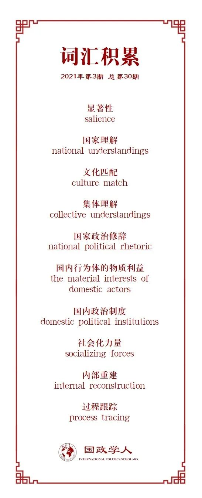

收录于合集

作品简介
【作者】 Andrew P. Cortell(安德鲁·考太尔)，路易克拉克大学国际事务系助理教授；James. W. Davis, JR.(詹姆斯·戴维斯) ，圣加伦大学国际政治系教授。
【编译】 程朵依（国政学人编译员，中国人民大学国际关系学院外交学专业硕士）
【校对】 吕紫烟
【审核】 姚寰宇
【排版】 余姣
【美编 】游矩家
【来源】 Andrew P. Cortell, James W. Davis Jr.. Understanding the Domestic Impact of International Norms:
A Research Agenda[J]. International Studies Review ,2000,2(1).
【归档】 《国际关系前沿》2021年第3期，总第30期。
期刊简介
《国际研究评论》（ International Studies Review ）创刊于1957年，原名为 Mershon International Studies Review ，于1999年更改为当前的刊名，卷编号从1重新开始。该期刊是由牛津大学出版社代表国际研究协会出版的同行评审学术期刊，以季刊形式发行。主编是Amanda Murdie。2019年影响因子（Impact Factor）为2.232076。
理解国际规范的国内影响：
一个研究议程
Understanding the Domestic Impact of International Norms:
A Research Agenda
内容提要
近年来，学术界开始讨论国内结构和进程是如何影响国际规范的合法性的。本文认为，国际规范的国内合法性是衡量其对国家行为影响的重要变量。但学者们对国际规范在国内舞台上的合法性或显著性、及其如何产生国内显著性的路径关注不足。本文 首先 提出了衡量国际规范之国内显著性的 一个框架； 其次 ，确定了国际规范进入国家舞台的 四种途径 和制约其对国内政治进程的影响的 一个因素； 最后 提出了 未来实证研究的方向。
文章导读
01
导论
国际规范通过国内政治过程对国家行为产生影响。其中，有两个国家层面的因素至关重要：规范的国内显著性（salience）或合法性，以及国内政策辩论的结构背景。它们制约了国际规范对国内政治进程的影响，并解释了不同国家在理解和遵守国际规范方面的重大差异。然而学术界却缺少对显著性的明确定义，因此很难知道在国内政治语境中应该观察或衡量什么。此外，明确国际规范获得国内显著性的机制，或将有助于深入了解各种国际规范在国内话语中的显著性的差异；同时，有助于了解衡量显著性的维度。
本文将国内显著性的概念具体化，并确定了国际规范产生国内显著性的若干机制和条件。重点在于弄清楚促进国际规范在国内政治舞台上取得“应然”地位的因素。同时本文试图理解，为什么一些国际规范在国内政治话语中产生了共鸣，而另一些则没有。 本文行文如下： 第一部分 定义了显著性的概念； 第二部分 详细介绍了国内显著性产生的条件和机制； 第三部分 讨论了为制定可检验的假设所必须的实证研究； 结论部分 讨论了这一研究议程更广泛的含义。
02
**** 国际规范的国内显著性
国际规则和规范通过国内政治进程产生影响。显著性的概念凸显了国际规范在国内政治背景下的不同作用——这里定义为“面临选择时的行动方案（prescriptions）”。并非所有的国际规则和规范都能在国内辩论中引起共鸣。相反，只有在国家政治舞台上拥有持久合法性的规范才会被假定为行为指南和评判的基础。然而，在衡量国际规范之国内显著性的差异时，存在着多重概念上的困难。若要进行更为精确的衡量，就需要从 国家话语 、 国家制度 和 国家政策 这三个方面的变化进行考察。
国际规范取得国内影响力的第一个标志是它在国内政治话语中的出现。 通常表现为国家或社会行为体要求改革政策议程，并援引这一规范来证明变革的合理性，或使其他国内行为者的偏好非法化。
第二个标志是国家制度的变化，这表明规范取得的显著性已经不仅仅是名义上的了。 制度变迁有几种形式和步骤。首先，国际规范纳入国内法律和程序。其次，违背规范的国内制度被消除或削弱，制裁违反规范的行为的程序建立。总之，致力于执行强化国际规范的制度越多，国内显著性就越强。
第三个标志是对国家政策的分析。 这种分析可能并不直接，因为国家为了平息国内外压力、削弱或破坏规范的影响，可以轻而易举地改变一项政策，但却不能同时修改相关领域的其他所有政策和程序。因此，衡量任何一个政策变化的含义，都需要审查相关领域的其他很多政策。
03
国际规范如何具有国内显著性？
前文讨论了国际规范的国内显著性应当由国内话语分析、国家制度和政策三方面衡量。那么国际规范是怎么被引入国内政治的呢？
本节借鉴国际政治和国际法的研究成果，以理解国际规范获得国内显著性的一些可能的条件、机制和过程。 讨论围绕五个关键因素展开。 首先 ，我们分析国际规范和国家理解（national understandings）之间的“ 文化匹配 ”（culture match），这是国际规范进入国家舞台发挥影响的一个因素。 其次 ，分析转向国际规范进入国内的四种途径或机制： 国家政治修辞 、 国内行为体的物质利益 、 国内政治制度 和 社会化力量 。前三种机制主要在国内政治层面运作，而最后一种“社会化力量”一般来自国家制度层面的互动。
文化匹配（Cultural Match）
在政策辩论中，已有的国内理解制约着国际规范或将产生影响。这种情况被称为“ 文化匹配 ”。使用文化这个词表明，国际规范如果要获得国内显著性，需要与国内规范、普遍的国内理解、信仰和责任产生共鸣。因此，国内话语提供了国际规范产生意义的语境，从而制约其运行。
当这种文化匹配存在时 ，国内行为体很可能会把国际规范视为既定（as a given），并本能地接受与之相关的义务。此时，国内显著性是自动产生的。 反之，当国际规范与国内理解、信仰、或责任相冲突时 ，国内行为体可能会发现，诉诸国际规范是没有用的。而 当缺乏先入为主的观念和信仰时 ，国际规范更有可能在国内话语、法律和制度中确立合法性。
文化匹配是动态的和可延展的。国际规范与国内理解的关系可能会随着时间的推移而改变——可能更一致，也可能更不一致，国际规范在国内的显著性也会因此变化。
政治修辞（Rhetoric）
政治修辞或说服性话语，也可以作为一种促成 集体理解 （collective understandings）并带来国内显著性的机制。
国家领导人 就国际规范赋予各国义务的合法性发表声明，通常会提升规范在国家舞台上的显著性。这是因为，领导人的声明将成为社会合法化话语的一部分，在国内和国际两个层面上建立主体间的理解和期望，并约束政策选择。 社会运动领导人 的言论也可以增强国际规范的国内显著性。关于社会运动的文献发现，在一系列议题和国家背景下，社会领导人对国际准则的倡导呼吁，成功确立了规范在更广泛的国内政治辩论中的显著性。
在国际规范与现行国内理解不完全匹配的情况下，国际规范的支持者尤其面临着这种政治和修辞斗争。
国内利益（Domestic Interests）
研究表明，如果国际规范符合重要的国家利益，无论是经济利益还是安全利益，那么国际规范就更有可能具有显著性。仅仅是狭隘的国内物质利益可能不够，我们必须将 特殊利益 与国家更普遍的 信仰 和长远的 优先事项 联系起来。
例如，约翰·伊肯贝（G.John Ikenberry）里认为，嵌入自由主义的 布雷顿森林体系 和约翰·鲁吉（John Ruggie）所称的 规范性信条 ，它们之所以成功，是因为它们“为（美国和英国）各政治派别的政治领导人和社会团体设想了一种战后经济秩序，在这种秩序中，相互竞争的多种政治目标可以结合起来。这样，国际准则可以起到弥合国内裂痕的作用，使不同的物质和理想利益融合为国家利益”。
国内制度（Domestic Institutions）
第四个促成国际规范显著性的因素是 国内政治制度 。国内政治制度为公民和国家官员提供游戏规则，确立权利和义务，确定哪些是合法的、哪些是不合法的，并在此过程中帮助国家行为体确定国内和国际利益。将一项国际规范纳入国内制度将增强其显著性。例如，全球种族平等规范只有在被纳入国内法律框架之后，才在美国的政策辩论中具有显著性。欧洲共同体协定之所以被遵守，部分原因是它们已被成员国接受，并融入国家制度；有些国家官僚的职责就是确保协定的执行；还有强大的国内团体对维系这些协定有着强烈的兴趣。
上述讨论表明，一旦国际规范融入国内制度，其规定将随着时间的推移，对国家行为体的利益和行动产生影响。对规范的习惯性遵守或应用可能导致显著性的产生，因为此时，遵守规范被视为一个“国内”过程，并被假定具有“理所当然”的特征。
社会化力量（Socializing Forces）
社会化 ，即新成员接受社会偏好的行为方式的过程，是国际规范获得国内显著性的一种额外机制。
基辛格等 古典现实主义者 认为，稳定国际秩序的建立有赖于国家利益与国际合法化原则的成功结合。从这个角度来看，社会化是使国家（特别是革命国家）的个体愿望与国际普遍接受的标准相协调的过程。许多学者指出，“ 内部重建 （internal reconstruction）”是一种将国家社会化以适应特定国际秩序的方法。奉行现实主义传统的人发现，由更强大的国家对弱国进行内部重建是国际关系的一个共同特征，特别是在霸权时期。
从事 自由主义传统研究 或来自 社会建构主义 视角的学者发现，社会化可能是非国家行为体行为的结果。一项关于国际科学规范传播的研究发现，是国际组织和国际专家团体将国家社会化，并使其认识到接受科学指导的必要性和适当性的；跨国宣传网络是促使各国采纳国际准则的另一条途径。
众所周知，社会化的影响既非单向，也非不可逆转。随着时间的推移，国内行为体将国际规范视为合法的程度可能取决于其他国家对它的遵守情况。其他国家的普遍不遵守可能会激发国内行为体对规范合法性和效用的质疑。
04
实证研究的未来路径
上一节确定了国际规范具备国内显著性的几个可能的条件和机制。下一步就必须进行 实证研究 ，研究重点是具体的国际规范如何在不同国家背景下（不）具有显著性。调查导致一项或多项国际规范在某一特定情况下取得国内显著性的案例，通过这一过程，人们试图找出在其他情况下可能产生（或消除）该过程影响的条件。在这种情况下，“ 过程跟踪 （process tracing）”的目标是假设生成。在一个理论出现之前，必要的第一步是提出一套条件假设，将初始条件（包括国际规范的存在）与结果（包括规范的国内显著性）联系起来。”
产生这类假设的一种策略是使用比较案例研究 ，且应选择结果迥异的案例。也就是说，应该寻找某一特定国际规范在不同国家背景下具有不同程度显著性的案例。人们可以研究一个国家（如日本）自由贸易国际规范显著性的变化，也可以将日本的情况与其他国家类比，这种跨国家的比较可能有助于确定影响显著性的各种途径运作的范围条件。
我们现阶段提出的建议是保守（modest）的。案例研究是构建一个“更一般的国内显著性理论”的基石，而不是对一个充分发展的模型或理论的测试。发现的逻辑与检验的逻辑是不同的，我们预期，在未来，研究会朝着更严格的检验方向发展。
05
结论
当今，有关国际政治中规范的学术研究层出不穷。学者发现，国际规范对政策的影响往往与国内政治因素有关，且衡量国际规范的影响必须考虑其在国内政治话语中的显著性。
迄今为止，这些研究有两个中心缺陷。 首先 ，在国内政治领域，关于规范显著性或合法性的衡量标准鲜有学者涉及。 其次 ，国际规范对国内理解的影响机制或路径尚未得到系统研究。这些问题至关重要。
为了弥补不足、促进进一步的研究，本文提供了一种衡量国际规范国内显著性变化的方法；此外，确定了国际规范进入国内话语体系并产生影响的几种机制；希望通过实证研究，对国际规范何时对国家行为产生或多或少的影响提出更精确的假设。
译者评述
为弥补前人研究的不足，这篇文章把研究重点放在了国际规范对国内政治的影响上，建构了一种衡量国际规范国内显著性的方法，并分析了国际规范进入国内话语并产生影响的几种路径和机制。
从国际关系理论和比较外交政策研究角度讲, 国内政治和国际关系研究早在20世纪60年代开始就为人所重视。不过, 早期国际关系和国内政治间互动关系的研究是不对称的, 学者们大多强调国际问题的国内根源, 重视国内政治文化、官僚政治以及政治体制安排的差异如何影响国家的外交行为, 所谓“对外政策是国内政治经济的延续”, 说的就是这个道理, 或者如华尔兹给出的经典概念阐述, 即国际关系研究中的“第二种设想” (the second image) ；而对国际力量如何影响国内政治, 除了相互依赖、现代化研究和跨国关系理论中有些论述以外, 研究水平与前者相比总体上处于薄弱的地位。这种不对称状况直到古勒维奇 (Peter Gourevich) “第二种设想的颠倒” (the second image reversed)的提出, 才有所扭转。20世纪80年代以来, 在全球化和国际化的浪潮下, 比较政治学和比较外交政策领域出现了大量研究国际力量如何影响国内政治经济和外交变迁的文献。其中, 国际制度力量如何介入国家内部并影响其国内政治经济变迁, 就是其中极有影响的一个研究领域。【1】
参考文献
[1]苏长和.中国与国际制度——一项研究议程[J].世界经济与政治,2002(10):5-10.
词汇整理

文章观点不代表本平台观点，本平台评译分享的文章均出于专业学习之用, 不以任何盈利为目的，内容主要呈现对原文的介绍，原文内容请通过各高校购买的数据库自行下载。
好好学习，天天“在看”
国政学人
支持学术公益与知识传播
微信扫一扫赞赏作者 __赞赏
已喜欢，对作者说句悄悄话
取消 __
发送给作者
发送
最多40字，当前共字
上一页 1/3 下一页
长按二维码向我转账
支持学术公益与知识传播
受苹果公司新规定影响，微信 iOS 版的赞赏功能被关闭，可通过二维码转账支持公众号。